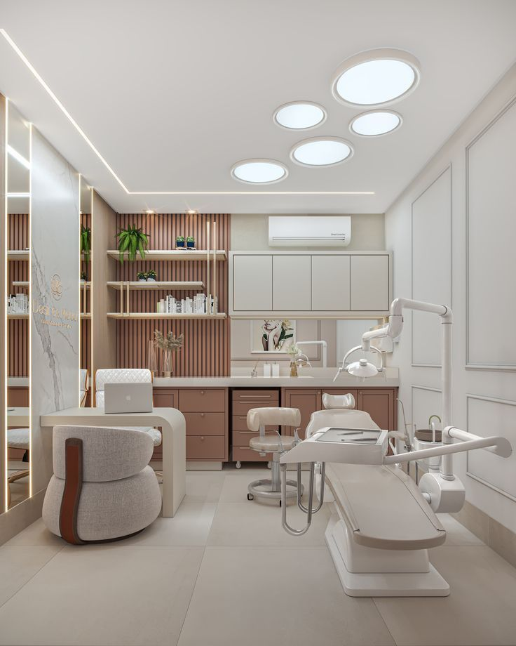

Spesialis Gigi
Memberikan perawatan gigi terbaik mulai dari pembersihan, penambalan, hingga perawatan estetika.
→Klinik Bina Ikhsan siap menangani berbagai penyakit dengan dokter spesialis yang terpercaya
Ayo Daftar
Memberikan perawatan gigi terbaik mulai dari pembersihan, penambalan, hingga perawatan estetika.
→Menangani berbagai gangguan sistem saraf dengan teknologi modern dan dokter spesialis berpengalaman.
→Memberikan layanan kesehatan jantung secara menyeluruh, dari pemeriksaan hingga perawatan.
→Perawatan saluran pencernaan, diagnosis, dan manajemen penyakit gastrointestinal.
→Perawatan tulang, sendi, dan otot dengan pendekatan bedah maupun non-bedah.
→Penanganan penyakit paru dan gangguan pernapasan dengan peralatan modern.
→